Detalhes da Ficha de Análise
Para acessar a tela de ‘Ficha de Análise’, é necessatio ir ao menu:
Qualidade -> Ficha de análise
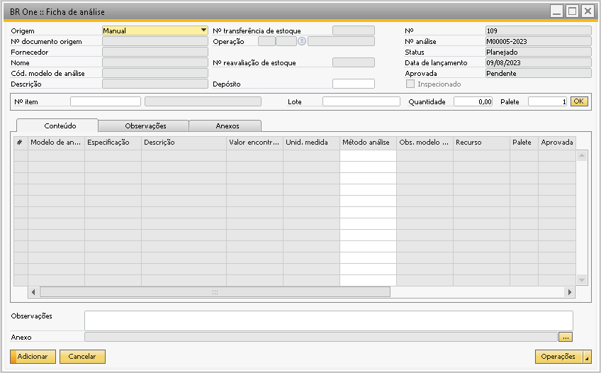{kind=link}
Nesta tela será feita a análise de um item comprado, produzido ou já em estoque.
A ficha de análise pode ser criada de 3 formas:
Manualmente
Automaticamente
Pelo Assistente
Campo Origem
A primeira coisa a se fazer nesta tela é selecionar o campo ‘Origem’, pois ele vai definir de onde o sistema buscará as informações para o preenchimento da ficha. A origem pode ser ‘Manual’, ‘Recepção de mercadoria’, ‘Nota fiscal de entrada’, ‘Entrada de produto acabado’ ou ‘Ordem de produção’.
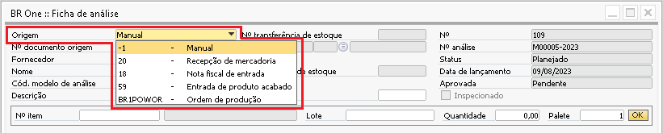{kind=link}
As fichas de análise são criadas com o status ‘Planejado’ e este status só pode ser alterado para as fichas já inseridas.
Campo Nº análise
O campo ‘Nº análise’ é gerado automaticamente pelo add-on e é baseado nas configurações da tela de ‘Numeração de fichas de análise’.
Campo Data de lançamento
O campo ‘Data de lançamento’ sempre será a data atual.
Campo Aprovada
O campo ‘Aprovada’no momento da criação da ficha terá o valor ‘Pendente’, após a liberação da ficha, este campo poderá ser alterado para uma das opções:
Não
Sim
Com restrições
{kind=link}
Dentro da aba ‘Conteúdo’ existe também uma coluna chamada ‘Aprovada’ com as mesmas opções.
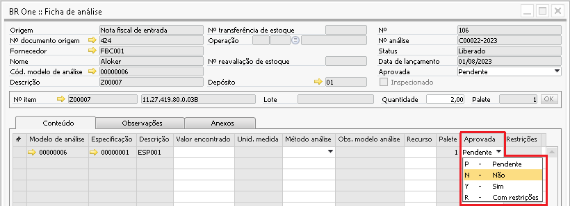{kind=link}
Então para preencher o campo ‘Aprovada’ do cabeçalho, o ideal é que este status esteja de acordo com a coluna ‘Aprovação’ das linhas. Caso uma das linhas possua restrição, o ideal é que a ficha tenha o seu status alterado para ‘Com restrições’, somente se todas as linhas tiverem sido aprovadas que a aprovação deverá ter o seu valor alterado para ‘Sim’.
Nas configurações de qualidade existem dois parâmetros que podem influenciar no comportamento do campo ‘Aprovada’ do cabeçalho, são elas:
Bloquear aprovação da ficha de análise de acordo com o valor esperado
Aprovar ficha de análise automaticamente
Para maiores detalhes acessar manual ‘Configurações de Qualidade - Aba Ficha de Análise’.
Campo Nº documento origem
O campo ‘Nº documento origem’ será utilizado para vincular o documento com a ficha de análise, o campo fica bloqueado apenas para a opção ‘Manual’ onde não é necessário vincular nenhum documento, para as demais opções este campo fica liberado para preenchimento.
Campos Fornecedor e Nome
Os campos ‘Fornecedor’ e ‘Nome’ são preenchidos automaticamente ao vincular um documento de ‘Recebimento de mercadoria’ ou ‘NF de entrada’, e para as opções ‘Manual’, ‘Entrada de produto acabado’ ou ‘Ordem de produção’ estes campos não serão preenchidos e ficarão bloqueados.
Campo Cód. modelo de análise
O campo ‘Cód. modelo de análise’ e ‘Descrição’ serão preenchidos quando o modelo de análise vinculado ao item estiver na linha do campo ‘Modelo de análise’ conforme a imagem abaixo:
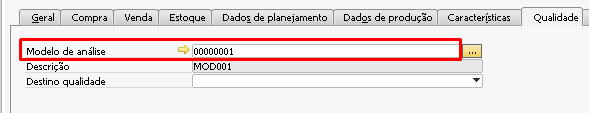{kind=link}
Se o modelo de análise estiver vinculado na tabela conforme a imagem abaixo os campos não serão preenchidos.
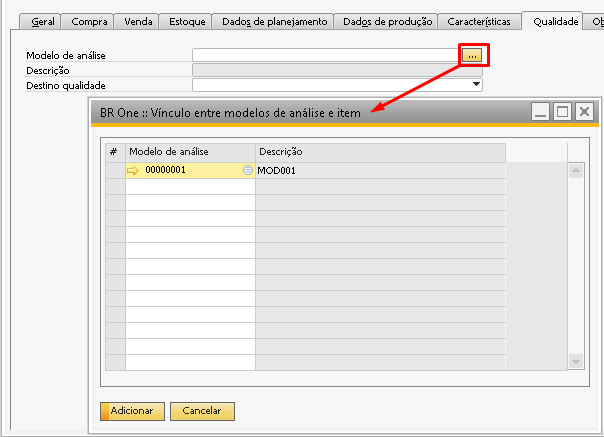{kind=link}
Quando a ficha de análise é criada para a operação de uma OP e não para item, os campos também serão preenchidos conforme o modelo de análise vinculado a operação.
Parâmetro marcado
Se o Campo “Não realizar transferência do item automaticamente” estiver marcado não será realizado a transferência de estoque de forma automatica.
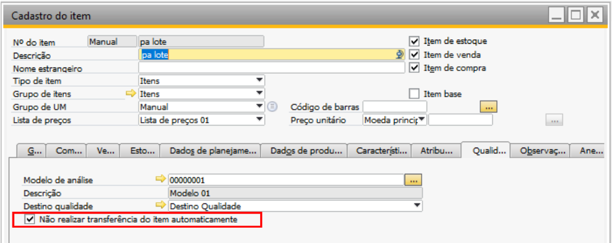A ficha é gerada Pela Ordem de produção de retrabalho ao realizar reavaliação de estoque.
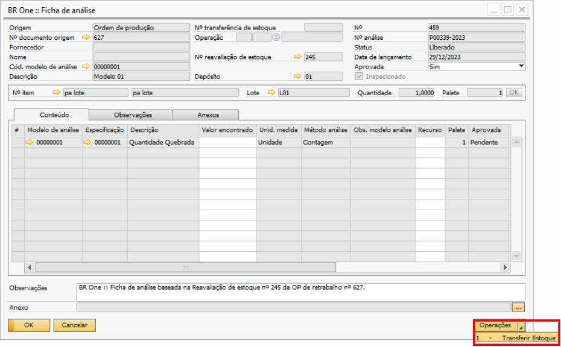Após liberar e aprovar a ficha, ao tentar realizar a transferência de estoque o add-on não permite.
“BR One :: Item está configurado para não permitir transferência automático”
Parâmetro desmarcado
Se o Campo “Não realizar transferência do item automaticamente” não estiver marcado será realizado a transferência de estoque de forma automática.
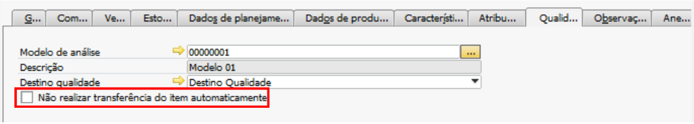A ficha é gerada Pela Ordem de produção de retrabalho ao realizar reavaliação de estoque.
Após liberar e aprovar a ficha ao clilcar em “Opções” para realizar a transferência de estoque irá ser aberto a tela de “Mensagem de sistema” e ao selecionar “SIM”, será realizada a transferência.
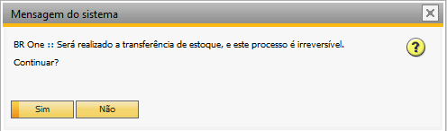“BR One :: Transferência n°743 inserida com sucesso”
Campo Nº transferência de estoque
O campo ‘Nº transferência de estoque’ será preenchido sempre que houver uma transferência de estoque vinculada a ficha.
Existem alguns parâmetros que realizam a transferência de estoque automaticamente, e após a transferência adicionada a sua numeração ficará vinculada ao campo.
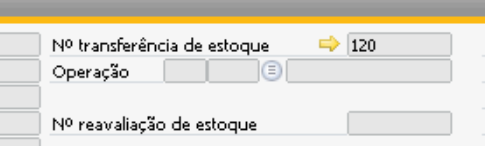{kind=link}
Caso o sistema tente adicionar a transferência e ocorra algum erro, a transferência não será realizada automaticamente, sendo necessário adicioná-la de manualmente através do botão ‘Operações’ e ‘Transferir estoque’ conforme a simulação abaixo:
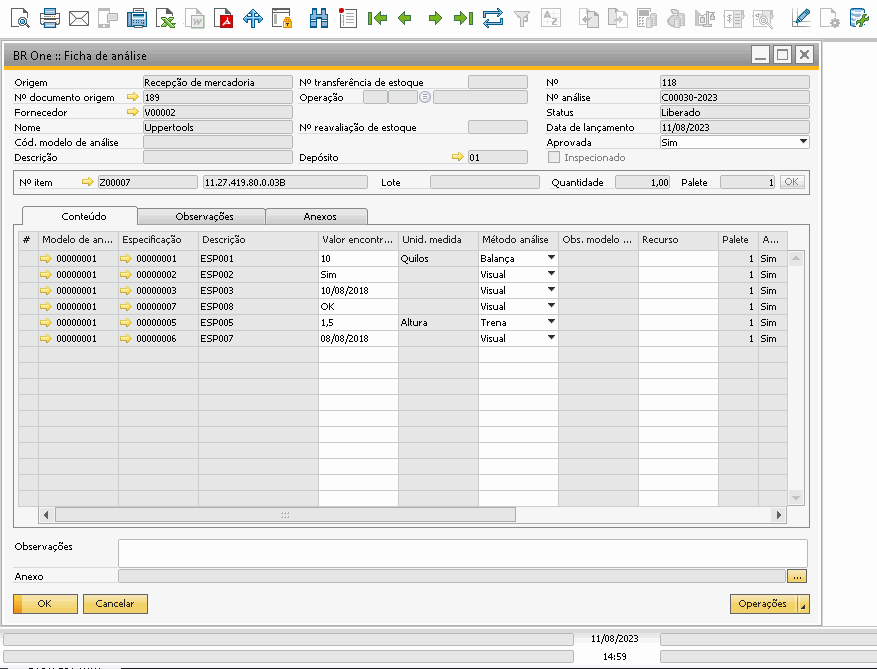{kind=link}
Obs. A Opção ‘Transferir estoque’ está disponível apenas quando a opção de transferir o item automaticamente estiver selecionada nas configurações de qualidade conforme o print abaixo. Caso a opção esteja desmarcada e o usuário queira gerar uma transferência para a ficha de análise é necessário gerar a transferência manualmente por dentro da tela de Transferência do estoque.

Caso o depósito de origem ou depósito de destino tenha o parâmetro ‘Ativar Posições no depósito’ selecionado, é necessário que no ‘Cadastro do item’ ou no ‘Depósito’ tenha uma ‘Posição padrão definida’.
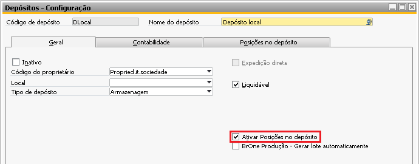 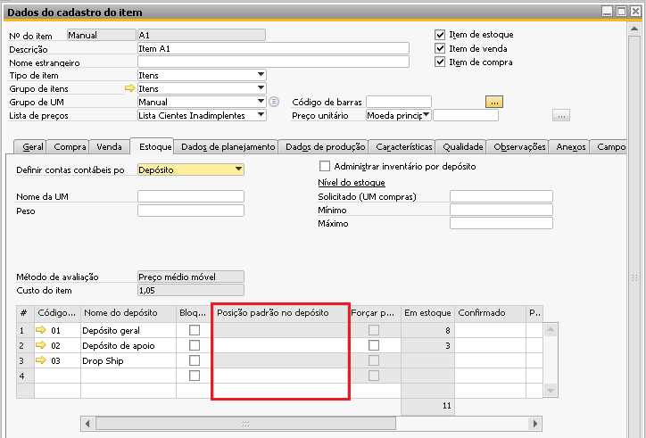 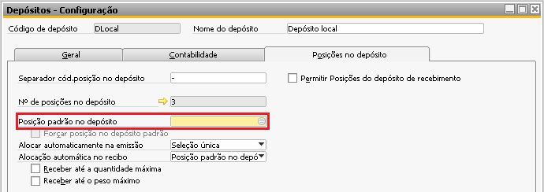{kind=link}
{kind=link}
{kind=link}
Caso não seja possível adicionar a ‘Transferência de estoque’, no momento da inserção de fato, será exibido uma mensagem inicial padrão seguido de uma mensagem de retorno, a qual possuirá o código do erro ocorrido e uma descrição técnica.
No exemplo a seguir, é possível visualizar a mensagem padrão na primeira linha e o retorno na segunda linha da imagem:
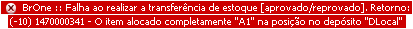{kind=link}
BR One :: Falha ao realizar a transferência de estoque [aprovado/reprovado]. Retorno: X.
O item e a quantidade que estarão na transferência de estoque serão os mesmos da ficha de análise. Caso a ficha seja uma origem do tipo ‘Ordem de produção (BR One)’, é possível realizar uma ficha com quantidade parcial em relação ao documento de origem, ou seja, uma OP com quantidade planejada de 20, que tenha sido realizada uma entrada de PA de 10, e criado uma ficha de análise apenas para a quantidade 5.
Caso ocorra o cenário descrito acima e o item seja um item administrado por lote, serão recuperados e atribuídos na ‘Transferência de estoque’ os lotes por ordenação de data, onde primeiro será considerado a data do campo ‘Data de admissão’, e caso não tenha este campo preenchido, será considerado o campo que armazena a ‘Data de criação’.
Caso a transferência de estoque vinculada à ficha de análise seja cancelada, ela será desvinculada da ficha e poderá ser criada uma nova transferência de estoque.
Campo Ordem de produção de origem
Campo ‘Ordem de produção de origem’ será preenchido quando a origem do documento for ‘Entrada de produto acabado’ ele vai indicar qual a OP realizou a entrada de PA do item que está sendo analisado.
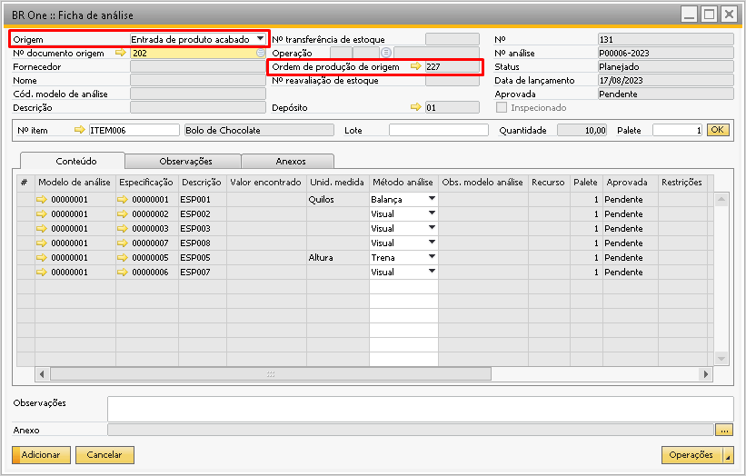{kind=link}
Campo Nº reavaliação de estoque
Campo ‘Nº reavaliação de estoque’ será preenchido para as OPs do tipo ‘Retrabalho’ que realizam esta reavaliação de estoque.
Como na liberação de uma OP do tipo retrabalho o sistema realiza uma transferência de estoque, enviando o item para um depósito de retrabalho, na entrada de PA é realizada uma nova transferência de estoque onde retorna o item do depósito de retrabalho para um depósito escolhido pelo usuário.
Como na liberação de uma OP do tipo retrabalho o sistema realiza uma transferência de estoque, enviando o item para um depósito de retrabalho, na entrada de PA é realizada uma nova transferência de estoque onde retorna o item do depósito de retrabalho para um depósito escolhido pelo usuário.
Este novo depósito escolhido para a entrada de PA que será utilizado no campo ‘Depósito’ da ficha de análise. Note também, que as fichas geradas quando a OP é do tipo Retrabalho também trazem esta informação no campo ‘Observações’ do rodapé.
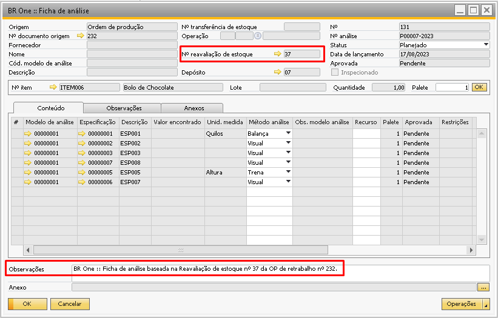{kind=link}
Campo Inspecionado
O campo ‘Inspecionado’ é utilizado no processo de ‘Skip Lote’, onde as fichas que passam por inspeção e são aprovadas manualmente ficam com este campo marcado conforme a imagem abaixo.
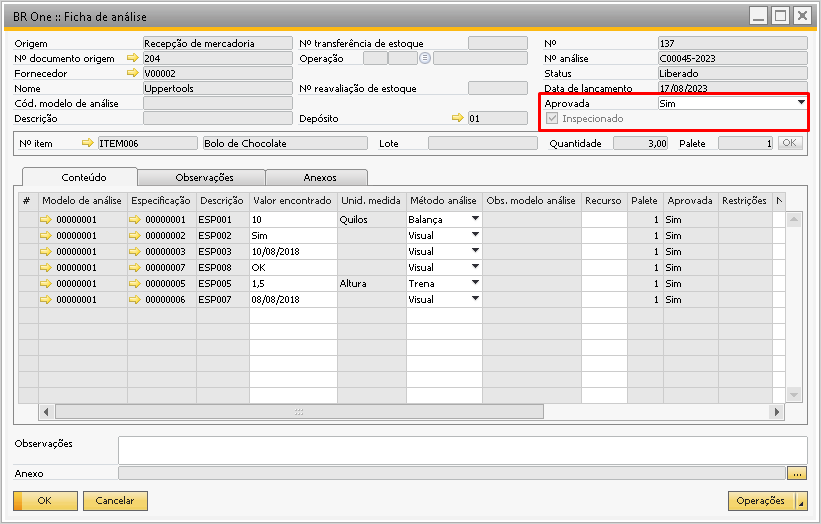{kind=link}
Já quando a ficha tem resultado aprovada diferente de ‘Sim’, ou é aprovada automaticamente pelo processo de ‘Skip Lote’ o campo ‘Inspecionado’ fica desmarcado.
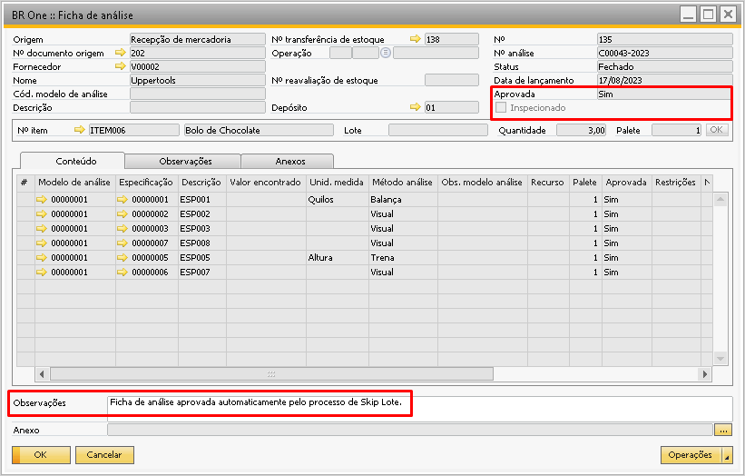{kind=link}
Campo Quantidade
Campo ‘Quantidade’ é preenchido conforme seu documento de origem, quando este documento for um ‘Recebimento de mercadoria’, ‘NF-Entrada’ ou ‘Entrada de PA’, a quantidade a ser preenchida no cabeçalho da ficha de análise será a quantidade já em unidade.
Como o sistema trabalha com diferentes unidades de medida, a quantidade será recuperada através da multiplicação da coluna ‘Quantidade’ com a coluna ‘Itens por unidade’.
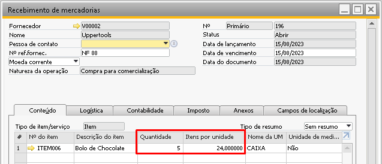{kind=link}
Logo ao realizar uma ficha de análise e escolher este documento e este item, será recuperado a quantidade através do cálculo 5 x 24 = 120.
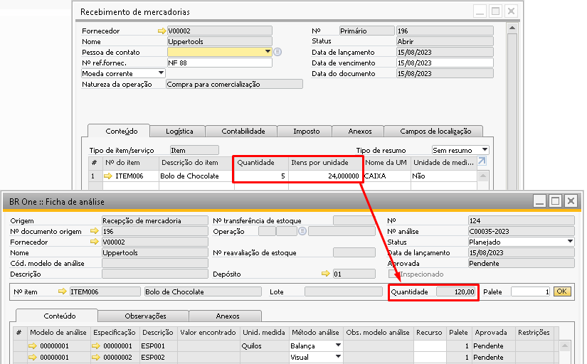{kind=link}
Isso é, no Recebimento 196 foram compradas 5 caixas, onde cada caixa possui 24 unidades, então o total de unidades é 120.
Campo Lote
Campo ‘Lote’, indica o número de lote do item administrado por lote, para itens administrados por nenhum e série, o campo ficará vazio.
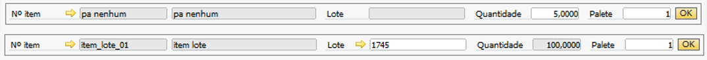{kind=link}